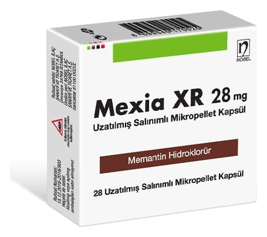

Mexia XR 28 mg Uzatılmış Salınımlı Mikropellet Kapsül ,28 Uzatılmış Salınımlı Mikropellet Kapsül

Ne için kullanılır
KT · Bölüm 1•MEXİAXR Mikropellet Kapsül,beyazımsı-krem pelletler içerenkoyu mavi-beyaz kapsüllerdir. •28kapsüllük ambalajlarda piyasaya sunulmaktadır. •MEXİAXR Alzheimer hastalığı olankişilerde ortailaşiddetli demansın (bunama) tedavisindekullanılan reçeteli birilaçtır. •Etkin madde,memantin hidroklorür’dür. • Alzheimer hastalığındaki hafızakaybı,beyindeki mesaj sinyallerindeki bozukluğa bağlıdır.Beyinde, öğrenme ve hafizadaönemli olansinirsinyallerinin iletilmesinde görevliolan N-metil-D-aspartat (NMDA)reseptörleri yeralır. Memantin,buNMDA reseptörlerinietkileyerek, sinir sinyallerininiletimini vehafizayı geliştirir. 2.MEXİAXR’ı